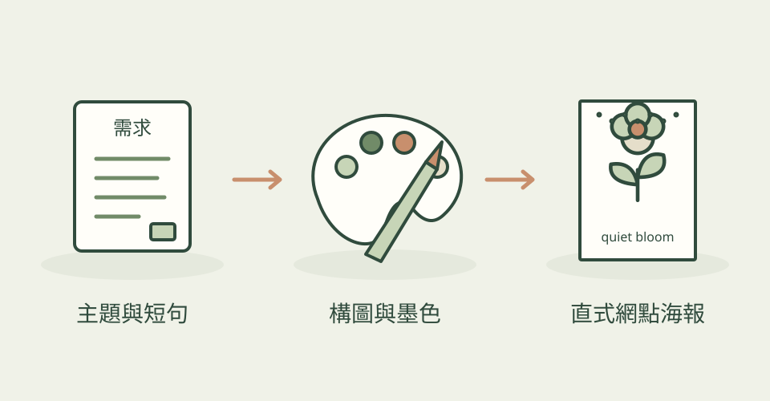

一朵花、一句短語，就能成為刊物或社群的主視覺。這份技能把主題、情緒和文字整理成 3:4 直式海報，用細小網點和紙張顆粒做出印刷感。
它怎麼幫忙
先選擇主體、構圖、字體、墨色與紋理，再寫成完整生圖提示詞。有明確標題時，文字會靠近花瓣、葉片或物件；只給主題時，通常保留小字。它會要求檢查網點濃淡、畫面大小層次和文字重複，最後交付圖片、實際提示詞與選用配方，便於延伸系列。
功能快速理解

把主題、文字和墨色排成直式海報，保留提示詞便於延伸系列；本站功能示意，非作者作品。
功能示意・本站繪製 放大查看可以這樣開口
這是一個可依需求修改的委託範例。
做一張薄荷綠百合海報，主題是夜晚與露水。百合佔畫面大半，用細網點表現花瓣明暗，保留帶顆粒的紙色，將 quiet bloom 小字放在花莖旁。交付圖片與最終提示詞。
適合什麼工作
適合獨立刊物、社群主視覺、展覽情緒板，以及想建立一致植物或靜物海報系列的設計師。
開始之前
- 準備工具
- 作者以 Codex Skill 為入口，預設使用 agent 環境的圖片生成能力。只需要提示詞時須明確提出；這個倉庫沒有附帶離線生圖引擎。
- 使用成本
- 技能本身採 MIT；AI agent 與圖片生成的帳號、額度或費用依使用平台另計，沒有附贈模型或生成額度。
- 交付內容
- 直式點陣海報、最終生圖提示詞、構圖與風格配方說明
- 先留意
- 2026-10-24 首次收錄；專案建立及目前分支提交都在 7 月 25 日。名稱中的 pixel 指編輯海報的細網點，不是遊戲角色、精靈圖或像素地圖。主圖是作者公開的 Mint Night Lily，非本站生成或實測；可編輯向量和正式印刷檔仍須另行製作。
作者與來源
本文依作者公開說明整理，沒有實際執行這個專案。功能插圖由本站繪製，原作者範例另行標示；並非本站執行技能的測試結果。GitHub 星數為專案總量，觀察時間為 2026年10月28日 08:29（台北時間）。
與前次快照相比增加 1 星；這不是 GitHub Trending 排名。